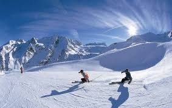
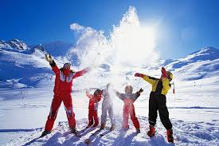

Quaint little alleys, cosy beer gardens or lively pavement cafés. Impressive mountain summits and blooming meadows. Old churches and traditional shops. Once you take the first look around in Garmisch-Partenkirchen, you’ll quickly realise: This is where I want to stay – at least, for a little while.

In Garmisch-Partenkirchen, you’ll feel welcome right away. As if you had been walking
the streets and hiking trails here for years already. As if you had enjoyed a cup of
coffee with locals and chatted about everything and anything countless times
before.
Why is that? The answer might remain the market town’s little secret forever. One thing’s for sure, though: Hardly anyone can resist the rustic charm and the almost limitless variety of Garmisch-Partenkirchen. Everyone finds their personal holiday fulfilment here. While skiing or cross-country skiing. While hiking or biking.

A stroll through historic Garmisch is an engaging journey back in time. The farm houses in Werdenfels with their lavishly embellished balconies tell their own story – just like the quaint little alleys and Lüftlmalerei mural paintings lining the Frühlingstraße.
Walk past the Alte Kirche, a church from the 13th century, admire the historic flair of the Polznkasperhaus, and process the new impressions at a shaded beer garden. You’ll see: Garmisch is the perfect place to let your mind wander and relax.
qually as endearing: the historic district of Partenkirchen. It’s jam-packed with fascinating history as well. The Fraundorfer Inn with its magnificent farmer’s wedding paintings, the Werdenfels Museum or Haus Simon!